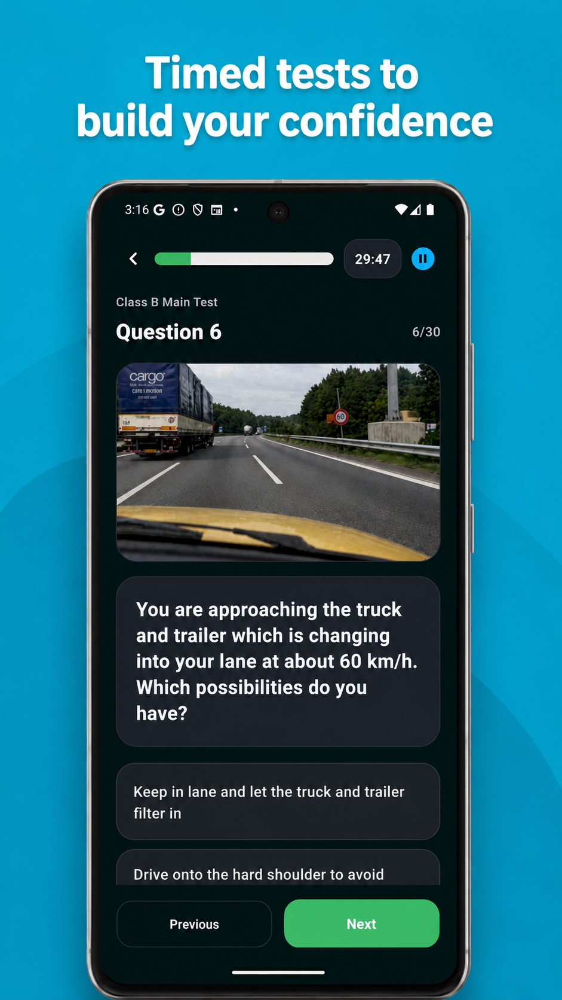
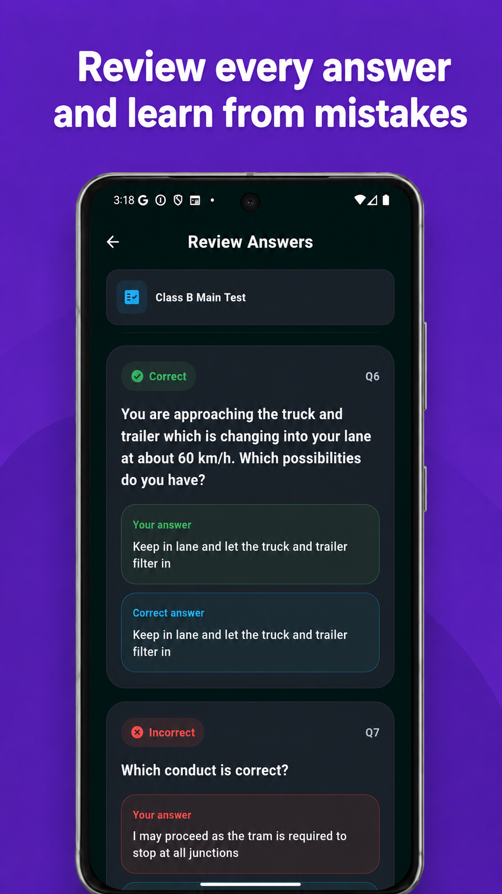
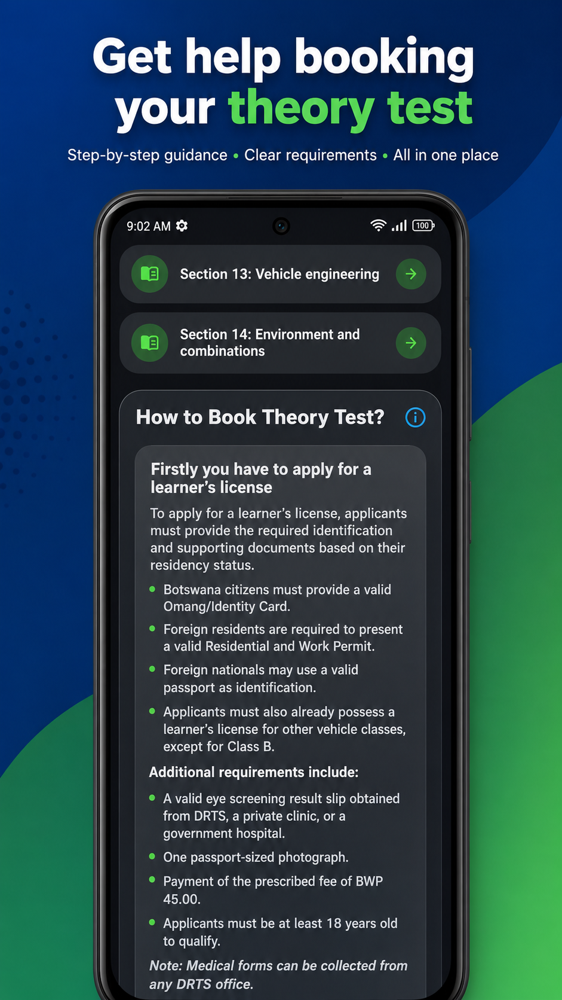

New Zealand road rules
Learn with your local requirements in mind.
A focused place for New Zealand learner drivers to study road rules, practise questions and build confidence with repeatable learning sessions.
Make every study session purposeful with a simple experience designed for learner drivers.
Learn with your local requirements in mind.
Build knowledge in manageable practice sessions.
Focus on the questions and topics that need another look.
A preview of the shared design approach across our driving licence learning apps.
Temporary visual preview: The images below are from DriveBW (Botswana), not DriveNZ. They are design references only and will be replaced with New Zealand-specific screenshots.




DriveNZ is an independent educational project, not an official government website or licensing authority. The legal pages below are drafts pending verification against the app's actual implementation.
How learning data and third-party services may be handled, and how to contact us.
Read privacy policyGuidelines for use, educational limitations, and any future paid features.
Read termsOptions for clearing local app data and requesting assistance with personal information.
Data deletionFor availability or support enquiries, contact the development team. Official app-store links will be added after listings are verified.
Contact support